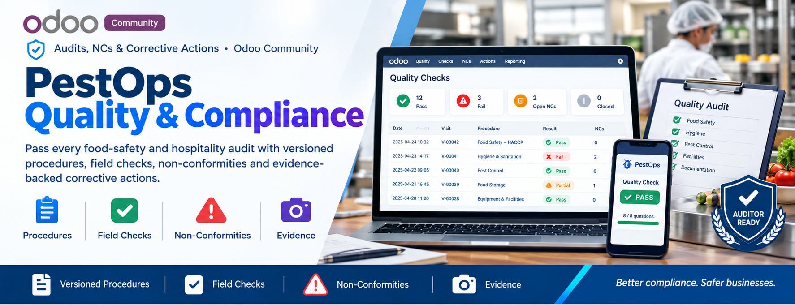
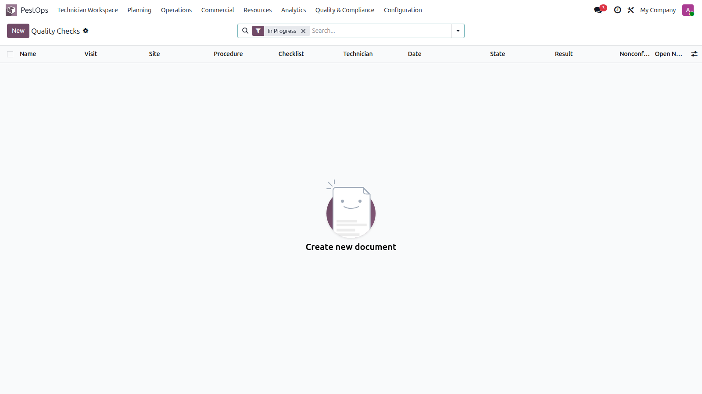
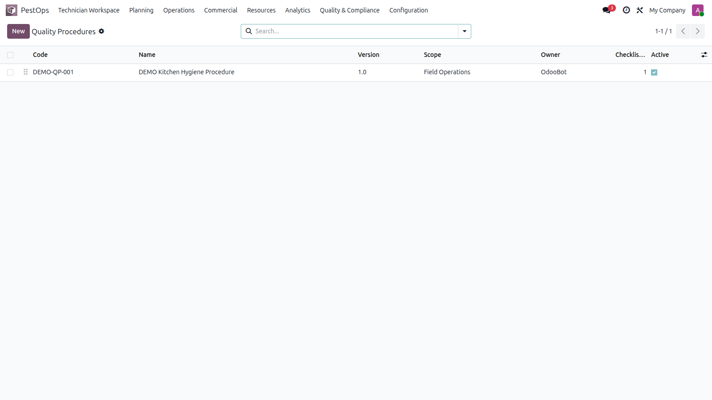
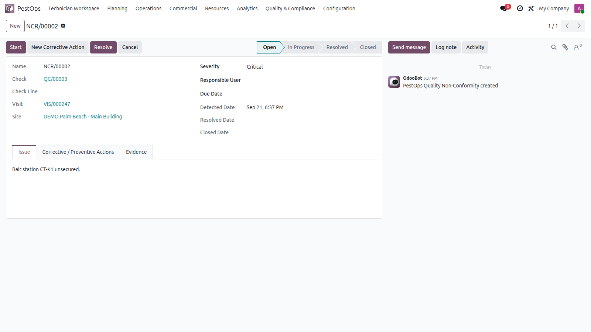

✅ Audits, NCs & Corrective Actions · Odoo Community
📋 Procedures ☑️ Field Checks 🚨 Non-Conformities 📸 Evidence


Quality checks with results and open non-conformity counters.
Structure what senior technicians "just know" into procedures anyone can execute — and prove every finding was driven to closure.
🏭 Food Plants 🏨 Hotel Chains 🏥 Healthcare 🍽️ HACCP Sites
Author procedures with scope, purpose and instructions, then attach versioned checklists whose items define response types (pass/fail, yes/no, text, number), mandatory flags, guidance, expected values and failure severity.

Quality procedures with versions and owners.
Run a quality check on any visit — responses auto-evaluate to pass/fail and the global result follows. Failures raise non-conformities (open → in progress → resolved → closed) with severity, due dates and responsibles; each NC drives corrective/preventive actions backed by photo or document evidence.

Critical non-conformity with actions and evidence tabs.
| Odoo Version | Community |
|---|---|
| License | LGPL-3 |
| Module Type | Extension (requires PestOps Core) |
| Dependencies | pestops_core, mail |
| External Services | None required |
📧 imazighenapps@gmail.com — fast response 🔄 Free Updates